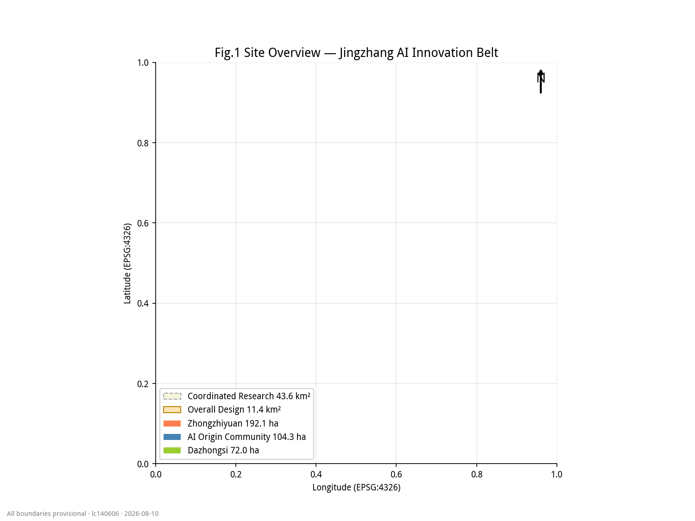
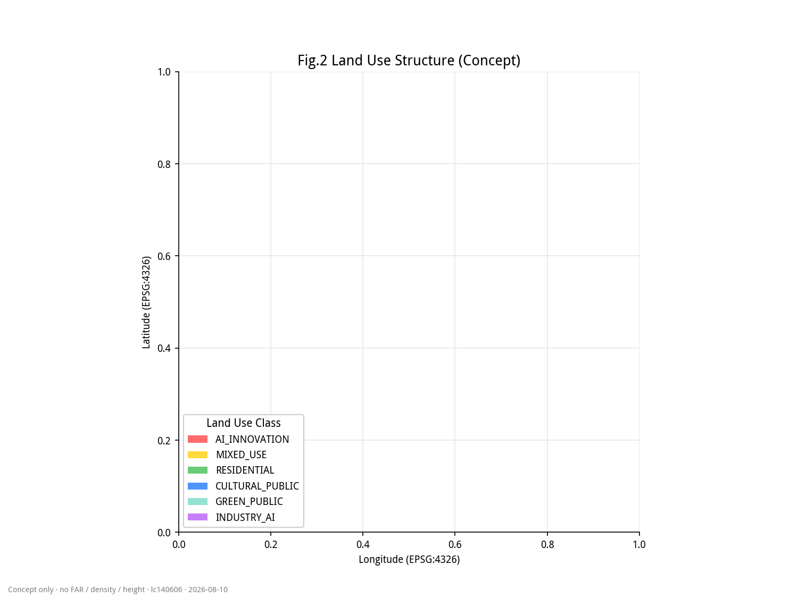
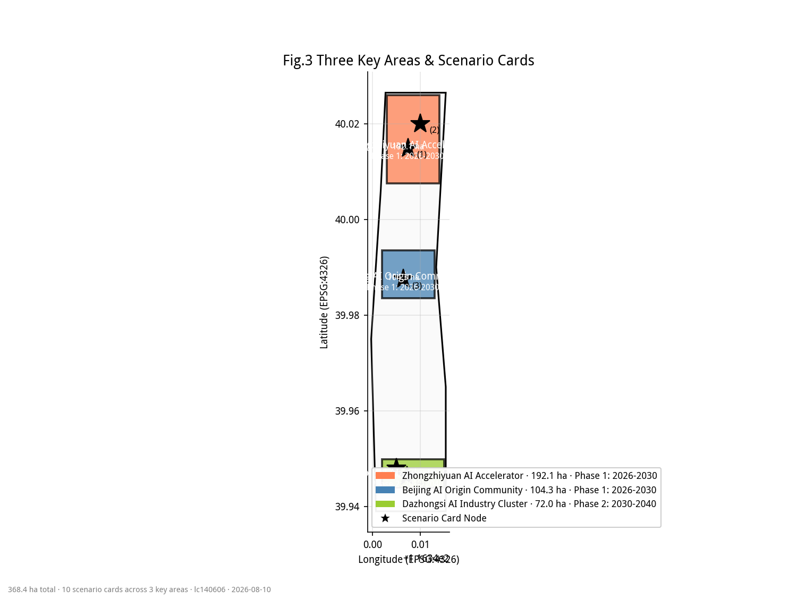
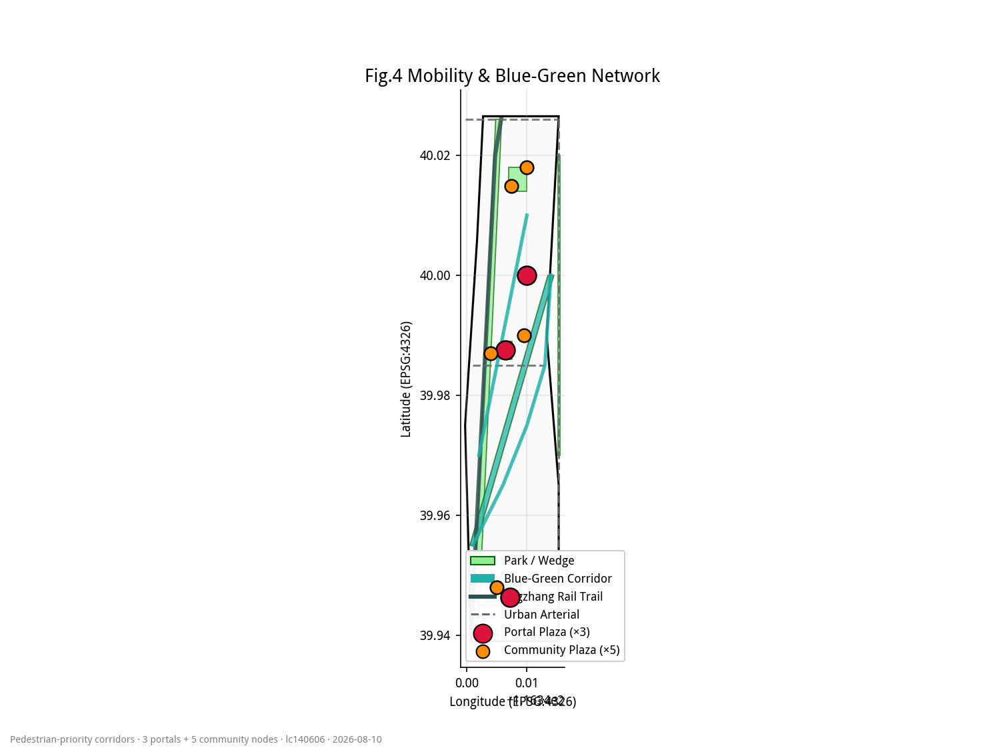
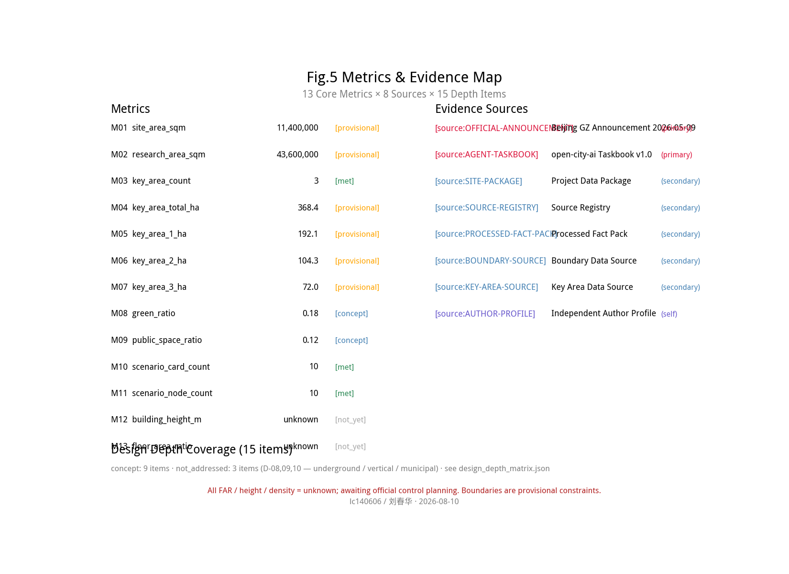

本方案以京张铁路遗址为文化主轴,提出"一轨三核"的 AI 开源长廊空间结构,以京张铁路 1909 工程师精神为根脉,串联三处重点区,北接高校策源,南接产业转化,东连蓝绿智联环。
以学院路门户主轴、京张铁路文化走廊、南长河·小月河蓝绿智联环构成"两轴一环"骨架。十一平方公里范围内,三处重点片区作为不同功能核心:


构建"三级公共空间体系":
沿南长河、小月河、昆玉河三条河道,构建"水陆并行"慢行网络,以"春华秋实 · 四季 AI"为主题种植,打造 5 大景观场景。


以"京张 1909 — 2026 — 2049"为时间骨架,展开三幕叙事。
